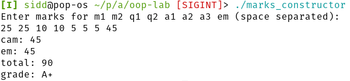

(practical 8) Aim: WAP to calculate grades using a Marks class and its constructor.
#include<iostream> using namespace std; class Marks { int m1, m2; int q1, q2; int a1, a2, a3; int em; int calculate_cam() { int m = (m1 + m2) / 2; int q = q1 > q2 ? q1 : q2; int a = ((a1 + a2 + a3) * 2) / 3; return m + q + a; } int calculate_total() { return em + calculate_cam(); } string calculate_grade() { int total = calculate_total(); string grade = "e"; if (total > 35) grade = "d"; if (total > 40) grade = "c"; if (total > 50) grade = "b"; if (total > 60) grade = "B+"; if (total > 70) grade = "a"; if (total > 80) grade = "A+"; return grade; } public: Marks() { cout << "Enter marks for m1 m2 q1 q2 a1 a2 a3 em (space separated): " << endl; cin >> m1 >> m2 >> q1 >> q2 >> a1 >> a2 >> a3 >> em; } void display_result() { cout << "cam: " << calculate_cam() << endl; cout << "em: " << em << endl; cout << "total: " << calculate_total() << endl; cout << "grade: " << calculate_grade() << endl; } }; int main() { Marks m = Marks(); m.display_result(); }

Figure 1: Output
(practical 9) Aim: WAP to create abstract Integer class on top of the int data type.
#include<iostream> using namespace std; class Integer { int i; public: Integer(int val): i(val) { } Integer(): i(0) { } int get_value() { return i; } Integer add_integer(Integer a, Integer b) { Integer c; c.i = a.i + b.i; return c; } }; int main() { Integer ob(100); Integer ob2(200); Integer ob3; ob3 = ob.add_integer(ob, ob2); cout << "sum: " << ob3.get_value() << endl; }
(practical 10) Aim: WAP to demonstrate dynamic memory allocation and destructors.
#include <iostream> using namespace std; class Sample { int *i; public: Sample() { i = new int[5]; for (int n = 0; n < 5; ++n) { *(i + n) = n + 1; } for (int n = 0; n < 5; ++n) { cout << "i at " << n << " is " << *(i + n) << endl; } } Sample(int size) { i = new int[size]; cout << "Enter " << size << " elements: "; for (int n = 0; n < size; ++n) { cin >> i[n]; } for (int n = 0; n < size; ++n) { cout << "i at " << n << " is " << *(i + n) << endl; } } ~Sample() { cout << "destructor called" << endl; delete[] i; } }; int main() { Sample s = Sample(); Sample s1 = Sample(3); }